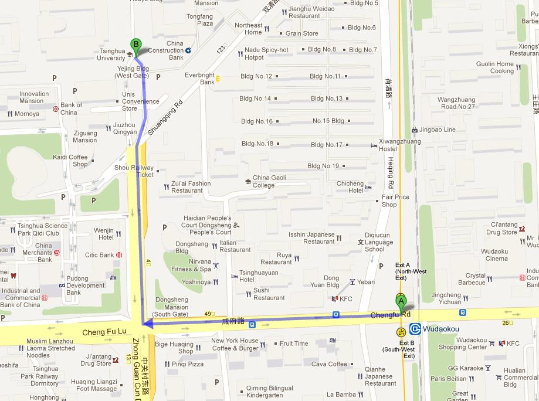

• International Participants may need a visa to attend QIP 2013 in Beijing. For more information about the visas, you may visit the webpage http://www.fmprc.gov.cn/eng/ljzg/3647/3648/t18417.htm. It is also greatly suggested to consult your nearest Chinese consular representation the documents required to get a visa.
• If you need an invitation letter, please register first at this link and then use your registration ID to make a request online. A signed invitation letter will be sent to you via email in a couple of days after the request is made. Please note that only an Invitation Letter of Duly Authorized Unit includes your personal information in your passport.
• To get the visa, you will need to submit an application to the nearest Chinese Consulate or Visa Center in your country. The process generally takes a few days (normally from two days to one week, depending on which visa service you use). In most cases, the Consulate/Visa Center will keep your passport during that time. Please take this into account when you plan your trip(s), and allow sufficient time to go through the application process comfortably.
Transportation from Beijing Capital International Airport to Conference Venue
By Taxi
The simplest option to get to Tsinghua University is to take a taxi. It costs 10 CNY (1.33 USD) for the first three kilometers and 2 CNY (0.27 USD) per kilometer thereafter. An additional fuel fee of 3 CNY will be charged.
From Capital Airport to Tsinghua it will cost around 120 CNY. The trip usually takes 45 minutes. However, it may take more during rush hours (8:00am-10:00am and 4:30pm-7:00pm).
As most taxi drivers do not speak English, we recommend you to print the address of your hotel in Chinese characters.
If you wish to get to the conference venue in Tsinghua University, you can show the following Chinese note to the driver:
By Airport Shuttle
Airport Bus provides a much cheaper way to get to your destination. If you like this option, you can take Line 5 Bus (costs 16 CNY/person = 2.5 dollars) outside the airport and get off at the Zhongguancun Bridge station of this route. You might need the following picture if you do not know how to explain that you want to get off at Zhongguancun Bridge. Please print it out and show it to the driver. After you get off, you need to take a taxi to Tsinghua.
By Airport Express and Subway
The Airport Express is faster than shuttle bus and cheaper than taxi. It costs 25 CNY for a single trip/person. Please transfer at the stop of Dongzhimen to Line 13 (An additional 2 CNY) and then get off at the stop of Wudaokou. It takes 20 minutes from Wudaokou to Tsinghua by walk and the map below shows the way. 
More transportation information can be found at http://www.beijing-airport-transportation.com/